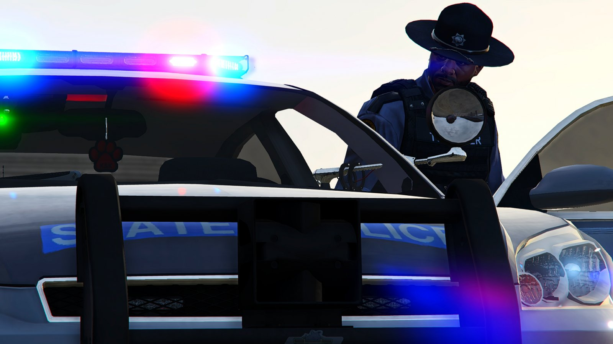
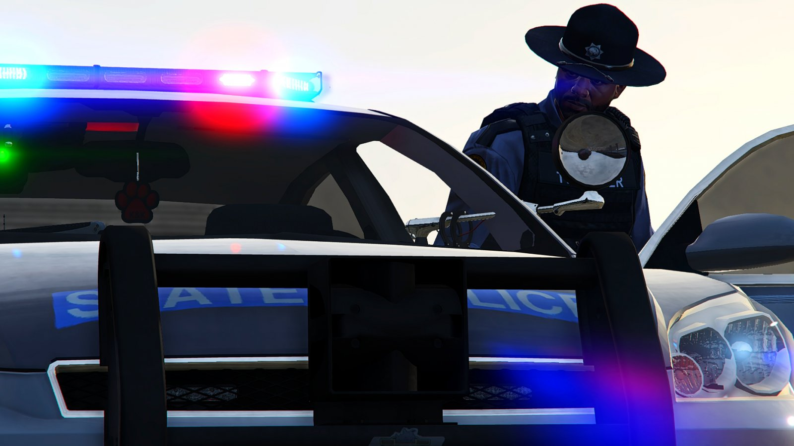

İÇERİKLER
Los Santos Polis Departmanı tarafından tutuklusun.
Konuşmama hakkına sahipsin.
Konuştuğun her şey mahkemede aleyhine delil olarak kullanılabilir.
Avukat tutma hakkına sahipsin.
Avukat tutacak paran yoksa devlet
sana bir tane atayacaktır.
- Her personelin mesai girişinde "1" nolu PD telsizine bağlanması ve mesaiye girdiğini belirtmesi zorunludur.
- Her personelin önce telsiz kodunu sonrasında da yapacağı anonsu ya kodla ya da olabildiğince kısa yapması gereklidir. Örn: "02 konuşuyor. Tüm aktif personel ön kapıda toplansın." ve ya "12 konuşuyor. 10-30 durumu."
- Telsizde birisine seslenecekseniz önce kendi kodunuz sonrasında da sesleneceğiniz personelin kodunu söylemeniz gerekli. Örn: "02-01" "01 dinlemede." "Şefim vsvs..." şeklinde.
- Genel olarak telsizde gürültü yapılmamalıdır. Sadece gerektiğinde kullanılmalıdır. 1-2 adım ötedeki bir kişiye telsizle seslenmek yerine yanına gidip konuşmalısınız.
- Başka bir devlet kurumundan yetkili telsize bağlandığında o anki en yüksek kişi cevap vermelidir. O anki alt rütbelerin istisnai durumlar dışında bölgeye giriş vs. izinlerini vermesi yasaktır.
- Devriye sırasında şoför yerine yolcu koltuğunda oturan Polisin telsiz kullanması gereklidir.
Lincoln : Tek kişilik özel devriye
Adam : iki kişilik devriye
Queen : 3+ kişilik özel devriye
Cadet ve Deputy rütbelerinin LINCOLN devriye atması yasaktır.Hiç bir Polis devlete ait devriye araçları ile trafik kurallarını gerekmedikçe ihlal edemez. Sıcak takip sırasında yapılan agresif sürüşler bu tüzüğe dahildir. Her Polis kendi arabasından sorumludur.Hiç bir olay olmadığı halde çakar ve siren açmak yasaktır.Baskın halinde 0.50 mil mesafeden az kaldığı taktirde sirenler açmak zorundasınız.Şarap satış, Meth Pişirme vs. illegal bölgelere baskın harici giriş yapılamaz.
xxxxxxxxxxxxxxxxxxxxxxxxxxxxxxxxxxxxxxxxxxxxxxxxxxxxxxxxxxxxxxxxxxxxxxxxx